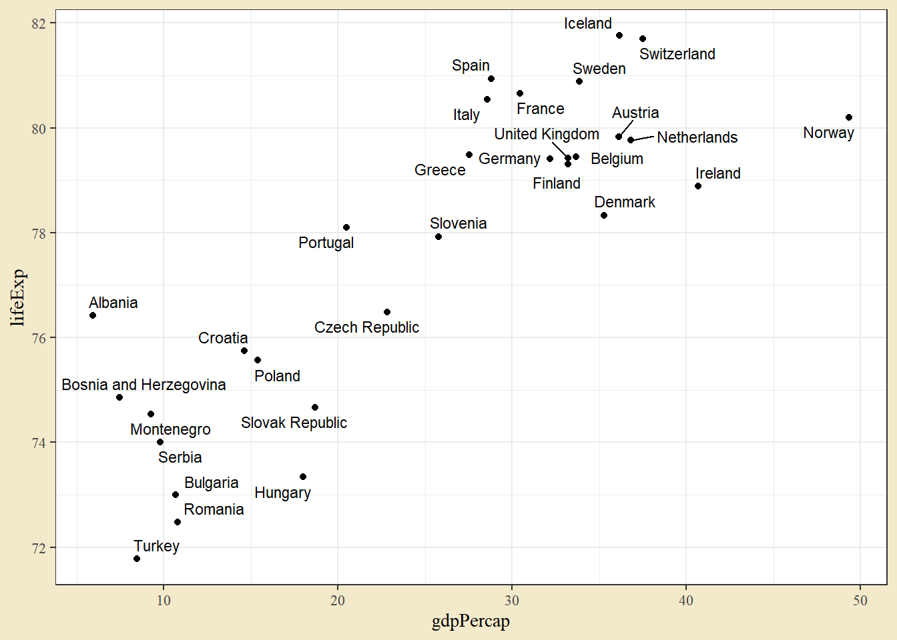

8 Datorövning 8. Regression och korrelation
Datorövning 8 handlar om regression och korrelation. Efter övningen ska vi kunna
skatta en regressionsmodell i R,
testa parametrar i modellen med F-test och t-test,
göra lämpliga tester av modellantaganden,
beräkna och tolka korrelationen mellan två variabler.
8.1 Regression
I en regression modelleras en numerisk variabel som en funktion av en annan numerisk variabel. Vid enkel linjär regression finns en sådan förklarande variabel och förhållandet mellan variablerna antas vara linjärt. Modellen kan uttryckas
\[y_{i} = \beta_0 + \beta_1 x_i + \varepsilon_i,\]
där \(y_i\) är observation \(i\) av den förklarade variabeln, \(\beta_0\) och \(\beta_1\) är parametrar, \(x_i\) är observation \(i\) av den förklarande variabeln, och \(\varepsilon_i\) är en slumpmässig felterm.
Ta som exempel data på förväntad medellivslängd och bnp per capita. Datan hämtas från gapminder-paketet. Paketet ggrepel och funktionen geom_text_repel() kan användas för att sätta punktetiketter som inte överlappar. För enklare tolkning av modellen transformeras bnp per capita till att vara i tusen dollar, snarare än dollar.
library(gapminder)
dat_eu07 <- gapminder %>%
filter(year == 2007, continent == "Europe") %>%
mutate(gdpPercap = gdpPercap / 1000)
library(ggrepel)
ggplot(dat_eu07, aes(gdpPercap, lifeExp)) +
geom_point() +
geom_text_repel(aes(label = country), size = 3)
Datan visar ett positivt samband mellan variablerna - högre bnp per capita är kopplat till högre medelllivslängd.
Uppgift 8.1 (Data för 1957) Vad måste ändras i stycket nedan för att plocka ut och göra en graf för Europa 1957?
dat_eu57 <- gapminder %>%
filter(year == 2007, continent == "Europe") %>%
mutate(gdpPercap = gdpPercap / 1000)
ggplot(dat_eu57, aes(gdpPercap, lifeExp)) +
geom_point() +
geom_text_repel(aes(label = country), size = 3)En regressionmodell kan i R skattas med lm-funktionen. Syntaxen är väldigt lik den för anovamodellen, men istället för en faktor som förklarande variabel används nu en kontinuerlig variabel.
mod <- lm(lifeExp ~ gdpPercap, data = dat_eu07)
summary(mod)##
## Call:
## lm(formula = lifeExp ~ gdpPercap, data = dat_eu07)
##
## Residuals:
## Min 1Q Median 3Q Max
## -2.79839 -1.30472 0.00807 1.33443 2.87766
##
## Coefficients:
## Estimate Std. Error t value Pr(>|t|)
## (Intercept) 72.27106 0.69416 104.113 < 2e-16 ***
## gdpPercap 0.21463 0.02514 8.537 2.8e-09 ***
## ---
## Signif. codes: 0 '***' 0.001 '**' 0.01 '*' 0.05 '.' 0.1 ' ' 1
##
## Residual standard error: 1.598 on 28 degrees of freedom
## Multiple R-squared: 0.7225, Adjusted R-squared: 0.7125
## F-statistic: 72.88 on 1 and 28 DF, p-value: 2.795e-09Funktionen summary ger en sammanfattning av modellen. Skattningen av parametern \(\beta_0\) ges som raden (Intercept) och dess tolkning är som förväntat värde i medellivslängd om bnp per capita är noll. Det är ofta lutningsparametern som är mer intressant. Skattningen av lutningsparametern ges på den rad som har samma namn som den förklarande variabeln, här gdpPercap. Den skattade parametern är 0.2146. Lutningsparametern har den generella tolkning som ökningen i y-variabeln när x-variabeln ökar med 1. I det här fallet ger 0.2146 att ett lands medellivslängd ökar med ungefär 0.2146 år (eller 78 dagar) när bnp per capita ökar med 1000 dollar.
Uppgift 8.2 (Modell för 1957) Skatta samma modell som ovan, denna gång med data från 1957. Tolka lutningsparametern i ord. Är effekten av ökad bnp större 2007 än den var 1957?
Man kan enkelt rita ut regressionlinjen i en graf med geom_smooth() och argumentet method satt till lm.
ggplot(dat_eu07, aes(gdpPercap, lifeExp)) +
geom_point() +
geom_text_repel(aes(label = country), size = 3) +
geom_smooth(method = lm)
Den blå linjen illustrerar regressionlinjen 72.27 + 0.2146x. Det grå bandet kring linjen är ett konfidensintervall för skattningen av y-variabeln.
Uppgift 8.3 (Graf för 1957) Använd geom_smooth(method = lm) för att lägga till en regressionslinje för data för 1957. Hur mycket påverkar de två avvikande länderna?
Utskriften från summary ger också tester av parametrarna (den högra kolumnen Pr(>|t|) ger p-värdet för ett test där nollhypotesen är att populationsparametern är noll). I det här fallet är både intercept och lutning skilda från noll. Motsvarande F-test för lutningen kan tas fram med en anova-tabell.
library(car)
Anova(mod)## Anova Table (Type II tests)
##
## Response: lifeExp
## Sum Sq Df F value Pr(>F)
## gdpPercap 186.031 1 72.883 2.795e-09 ***
## Residuals 71.469 28
## ---
## Signif. codes: 0 '***' 0.001 '**' 0.01 '*' 0.05 '.' 0.1 ' ' 1Testerna av en regressionmodell bygger på ett normalfördelningsantagande oh ett antagande om homoskedasticitet (lika varians i y oavsett position på x-axeln). Antagandena kan undersökas genom att titta på skattningens residualer - skillnaden mellan det faktiska y-värdet och modellens värde. Residualerna kan undersökas med ett histogram eller en QQ-plot. En annan vanlig diagnosplot är ett spridningsdiagram med skattade värden på x-axeln och residualerna på y-axeln.
dat_eu07 <- dat_eu07 %>%
mutate(Residualer = residuals(mod),
Skattade = fitted(mod))
ggplot(dat_eu07, aes(sample = Residualer)) + geom_qq() + geom_qq_line()
ggplot(dat_eu07, aes(Skattade, Residualer)) + geom_point()Om data följer en normalfördelning bör histogrammet visa en ungefärlig normalkurva, QQ-plotten bör visa punkter på den diagonala linjen och spridningsdiagrammet bör visa en slumpmässig spridning av punkter. Graferna pekar i det här fallet inte på några tydliga avvikelser från normalfördelningsantagandet, möjligen pekar QQ-plotten på mindre spridning i svansarna än en teoretisk normalfördelning.
Uppgift 8.4 (Diagnos för 1957) Gör lämpliga ändringar i data ovan för diagnosgrafer för data från 1957. Finns det några tydliga avvikande värden?
Uppgift 8.5 (Icke-linjära samband) Låt oss titta på hela gapminder-datan för 2007.
dat_2007 <- gapminder %>% filter(year == 2007)
ggplot(dat_2007, aes(gdpPercap, lifeExp)) + geom_point()Hur ser sambandet mellan bnp och medellivslängd ut? Vad skulle vara problematiskt med simpel linjär regression i det här fallet? När vi tittade på normalfördelningen sa vi att man ofta kan logaritmera en variabeln och få bättre egenskaper. Vad ska ändras i koden ovan för att använda logaritmerad gdpPercap istället för den ursprungliga variabeln? Är det sambandet mer linjärt?
Uppgift 8.6 (Log-transformerad data) Vad ska ändras i koden nedan för att använda logaritmerad gdpPercap istället för den ursprungliga variabeln? Är det sambandet mer linjärt?
dat_2007 <- gapminder %>% filter(year == 2007)
ggplot(dat_2007, aes(gdpPercap, lifeExp)) + geom_point()Uppgift 8.7 (Blodtrycksdata) Gör lämplig ändring i stycket nedan för att läsa in fliken Blodtrycksdata från filen Uppgiftsdata.xlsx.
library(readxl)
dat_blod <- read_excel("___", sheet = "Blodtryck")Uppgift 8.8 (Blodtrycksgraf) Gör ett spridningsdiagram med ålder på x-axeln och blodtryck på y-axeln. Lägg till en regressionslinje med geom_smooth(method = lm).
ggplot(___, aes(x = ___, y = ___)) +
___() +
___()Uppgift 8.9 (Blodtrycksmodell) Skatta och tolka en regressionmodell med ålder som förklarande variabel och blodtryck som förklarad variabel.
mod <- lm(___ ~ ___, data = dat_blod)Uppgift 8.10 (Blodtryckstest) Använd Anova() för att testa om det finns ett signifikant samband mellan ålder och blodtryck. Vad är testets nollhypotes och alternativhypotes?
Uppgift 8.11 (Blodtrycksdiagnos) Ta fram diagnosgrafer för blodtrycksmodell och avgör om det finns några tydliga avvikelser från normalfördelning eller några extrema värden.
dat_blod <- dat_blod %>%
mutate(Residualer = residuals(mod),
Skattade = fitted(mod))
ggplot(___, aes(sample = ___)) + geom_qq() + geom_qq_line()
ggplot(___, aes(Skattade, ___)) + geom_point()8.2 Korrelation
Korrelation ger ett mått mellan \(-1\) och \(1\) på hur väl två variabler samvarierar. En korrelation över noll tyder på ett positivt samband mellan variablerna - en observation med ett högt värde i den ena variabeln har också ett högt värde på den andra - medan en korrelation under noll tyder på ett negativt samband. I R kan korrelation beräknas med cor() och två variabler som första och andra argument. Funktionen cor.test() ger ett test där nollhypotesen är att korrelationen är noll.
cor(dat_eu07$lifeExp, dat_eu07$gdpPercap)## [1] 0.8499711cor.test(dat_eu07$lifeExp, dat_eu07$gdpPercap)##
## Pearson's product-moment correlation
##
## data: dat_eu07$lifeExp and dat_eu07$gdpPercap
## t = 8.5372, df = 28, p-value = 2.795e-09
## alternative hypothesis: true correlation is not equal to 0
## 95 percent confidence interval:
## 0.7058444 0.9265221
## sample estimates:
## cor
## 0.8499711Medellivslängd och bnp per capita har en stark positiv korrelation på 0.85 och den korrelation är signifikant skild från noll (p < 0.001). Notera att p-värdet är detsamma som för lutningsparametern i regressionen.
Uppgift 8.12 (Korrelationsmatris) Om man har fler än två variabler sammanfattas korrelationer ofta med en korrelationsmatris.
dat_eu07[, 4:6]## # A tibble: 30 × 3
## lifeExp pop gdpPercap
## <dbl> <dbl> <dbl>
## 1 76.4 3600523 5.94
## 2 79.8 8199783 36.1
## 3 79.4 10392226 33.7
## 4 74.9 4552198 7.45
## 5 73.0 7322858 10.7
## 6 75.7 4493312 14.6
## 7 76.5 10228744 22.8
## 8 78.3 5468120 35.3
## 9 79.3 5238460 33.2
## 10 80.7 61083916 30.5
## # … with 20 more rowscor(dat_eu07[, 4:6])## lifeExp pop gdpPercap
## lifeExp 1.00000000 0.06946716 0.8499711
## pop 0.06946716 1.00000000 0.0137427
## gdpPercap 0.84997107 0.01374270 1.0000000Vad är korrelationen mellan befolkningsstorlek och bnp per capita?
Uppgift 8.13 (Anscombes data) Den raka regressionslinjen eller det enkla korrelationsmåttet säger lite om hur data egentligen ser ut. En vanlig illustration av detta är Anscombes kvartett, fyra exempel konstruerade av den brittiske statistikern Francis Anscombe 1973. Datan finns tillgänglig i R som datasetet anscombe.
anscombePlotta de fyra graferna (x1 paras med y1 och så vidare) i spridningsdiagram och beräkna korrelation för varje par. Ett exempel ges för den första mängden nedan. Kommentera utfallet.
ggplot(anscombe, aes(x1, y1)) + geom_point()
cor(anscombe$x1, anscombe$y1)Uppgift 8.14 (Datasaurus Dozen. Beskrivande mått) Datasaurus-datan är en konstruerad datamängd som illustrerar hur skilda mönster i data kan ge samma punktskattningar (medelvärden, standardavvikelser och korrelationer). Datan finns tillgänglig som en del av TidyTuesday-projektet och kan hämtas med följande rad.
dat_saurus <- read_csv('https://raw.githubusercontent.com/rfordatascience/tidytuesday/master/data/2020/2020-10-13/datasaurus.csv')Datan innehåller en gruppering (dataset) och x- och y-koordinater. Beräkna medelvärden, standardavvikelser och korrelation för varje grupp i dataset genom att fylla i stycket nedan.
dat_saurus %>%
group_by(___) %>%
summarise(mean(x), mean(y), sd(x), sd(y), cor(x, y))Kommentera utfallet.
Uppgift 8.15 (Datasaurus Dozen. Grafer) Illustrera datasaurus datan med spridningsdiagram. Använd facet_wrap() för småfönster per dataset.
ggplot(dat_saurus, aes(x, y)) +
geom_point() +
facet_wrap(~ ___)Uppgift 8.16 (Galtons längdstudier. Installation av paket) En modern förståelse av regression införs under slutet av 1800-talet av Francis Galton (1822 - 1911). I en studie från 1886 samlade Galton in data på längder hos föräldrar och barn. En av Galtons slutsatser från den datan var att barn till långa föräldrar ofta blev kortade än föräldrarna. Extremvärden hade en tendes att återgå mot mitten - härifrån kommer namnet regression.
Galtons längddata finns tillgänglig i paketet HistData som Galton. Installera paketet, ladda paketet, och skriv ut datan.
install.packages("___")
library(___)
GaltonDatan är i tum. Om man föredrar cm kan man multiplicera med 2.54.
Galton <- 2.54 * GaltonUppgift 8.17 (Galtons längdstudier. Graf) Gör en graf med föräldrars medellängd (parent) och barnets längd (child). Eftersom det finns överlappande punkter kan man använda geom_count() eller geom_jitter() istället för geom_point().
ggplot(Galton, aes(parent, child)) + geom_count()
ggplot(Galton, aes(parent, child)) + geom_jitter()Uppgift 8.18 (Galtons längdstudier. Modell) Skatta en regressionmodell med barnets längd som förklarad variabel och förälderns längd som förklarande variabeln. Skriv ut resultaten och tolka lutningsparametern. Gör ett F-test med Anova().
mod <- lm(___ ~ ___, Galton)
summary(___)
Anova(___)Uppgift 8.19 (Galtons längdstudier. Konfidensintervall) Paketet emmeans(), som vi tidigare använt för att ta fram effekter i anovamodeller, har också en funktion för lutningsparametrar emtrends(). Vi kan använda den funktionen för att beräkna konfidensintervall för lutningen.
library(emmeans)
emtrends(mod, ~ 1, var = "parent")Funktionen emmeans() kan också användas för ett konfidensintervall för barnets längd vid ett specifikt värde för föräldrarnas längd. Följande ger ett konfidensintervall för barnets längd om föräldrarnas medellängd är 170 cm.
emmeans(mod, ~ parent, at = list(parent = 68))Vad ska ändras i stycket ovan för att beräkna ett konfidensintervall för barnets längd om föräldrarnas medellängd är 190 cm?
Uppgift 8.20 (Galtons längdstudier. Diagnosgrafer) Galtondatan omfattar 928 mätningar. Ta ut residualerna med residuals(mod) och gör ett histogram med hist() eller geom_histogram(). Följer residualerna en ungefärlig normalfördelning?